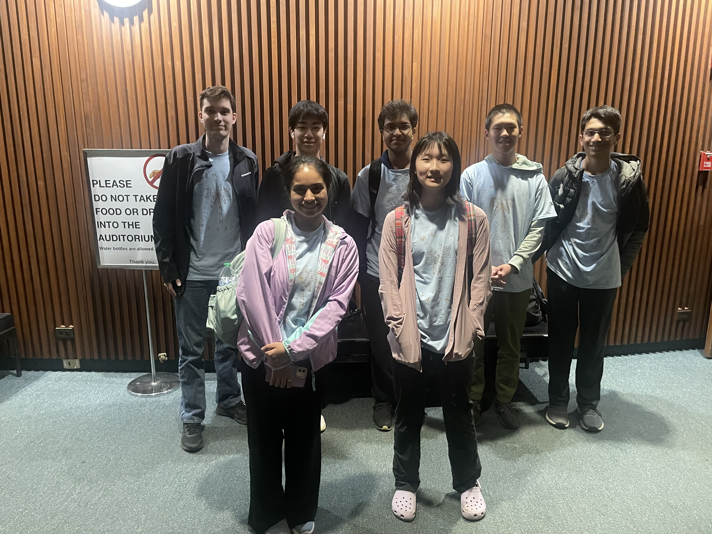

The Texas CMM 2025 Team
Texas Oak
Ekam Kaur
Xinyi (Sophie) Li
Rohan Pavuluri
Tarun Rapaka
Andrew Shen
Richard Wang
Coaches and organizers
Matthew Kroesche
Individual results
Tarun Rapaka and Richard Wang qualified for the Integration Bee Finals.
Richard Wang qualified for the Individual Tiebreaker Round.
Team results
Texas Oak placed 8th overall, 8th in Team Round, and 8th in Power Round, out of 40 teams.
Team photo

(Back to Main Page)